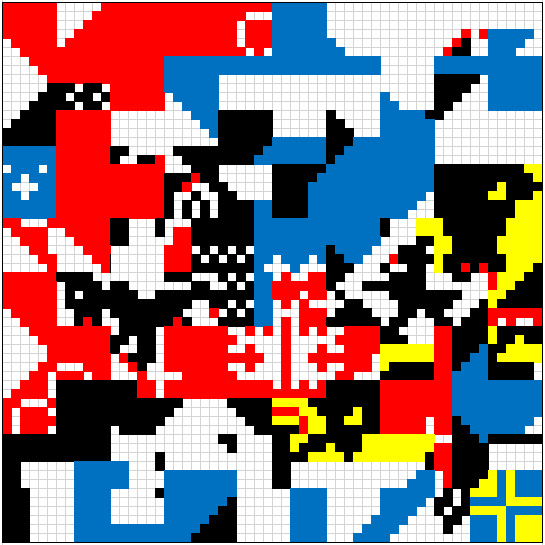
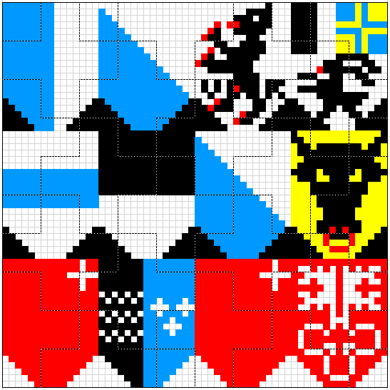

Solving the nonagram results in the following image:

The dotted lines in the original grid indicate that this is a jigsaw puzzle. Cut out the pieces and rearrange them to get this image:

This is an array of 12 coats of arms of Swiss cantons. There are exactly 26 Swiss cantons. They have a definitive constitutional order.
Some sources are a little squidgy on the order because, a few times, two cantons were formed by splitting one canton in half, so they entered simultaneously. But there is an order. The full Wikipedia page “Data Codes for Switzerland” has the proper order, though there seems to be a mobile bug that switches a couple of lines in the chart. The best source is the Swiss Cantonal Tree (thus the “tree” reference in the flavor text). Here’s an image:
https://www.worldatlas.com/articles/the-cantons-of-switzerland.html
The cantons start with #1 in the upper left and read left-to-right, top-to-bottom, as you’d expect.
Here’s one in Berne, Indiana:
https://www.skyscanner.com/trip/berne-in/things-to-do/the-swiss-canton-tree
And here’s the one in London:
https://commons.wikimedia.org/wiki/File:Swiss-UK_relations_Canton_Tree.jpg
This one has the same cantons in the same order, but the orientation is different. It reads down by columns, instead of across by rows. Silly British.
Map the cantons to letters as follows:
| Lucerne | 3 | C |
| Zürich | 1 | A |
| Appenzell Ausserrhoden | 16 | P |
| Grisons | 18 | R |
| Zug | 9 | I |
| Fribourg | 10 | J |
| Zürich | 1 | A |
| Uri | 4 | D |
| Schwyz | 5 | E |
| Aargau | 19 | S |
| Schwyz | 5 | E |
| Nidwalden | 7 | G |
The image yields the message CAPRIJADESEG, meant to be parsed as the clue “Capri Jades, e.g.” (fitting in the blanks). Capri Jades are CIGARETTES.
{kind=link}